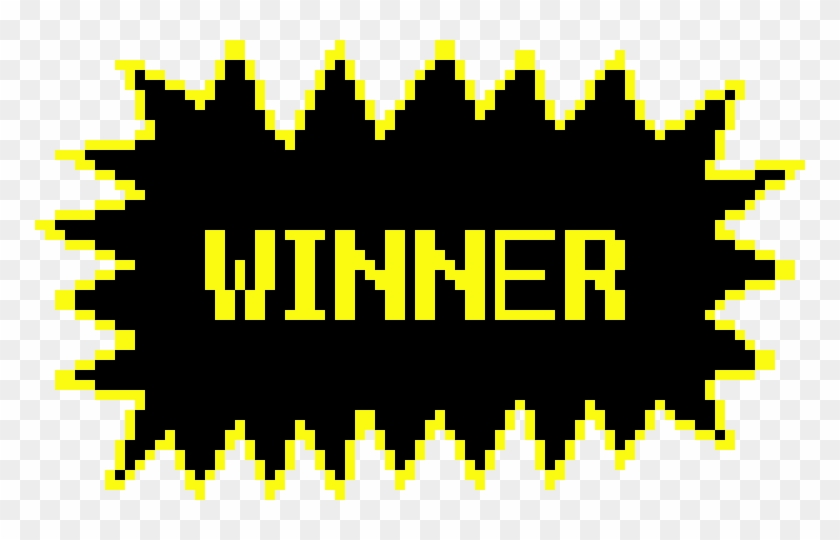

A Esfinge sorri com um misto de surpresa e desânimo. Uma luz forte muito forte brilha, te deixando temporariamente cega. Quando tudo volta ao normal você percebe que não só os seus ferimentos foram curados como também a floresta desapareceu.
Você está em uma clareira conhecida, bem perto da sua casa!
VOCÊ VENCEU
